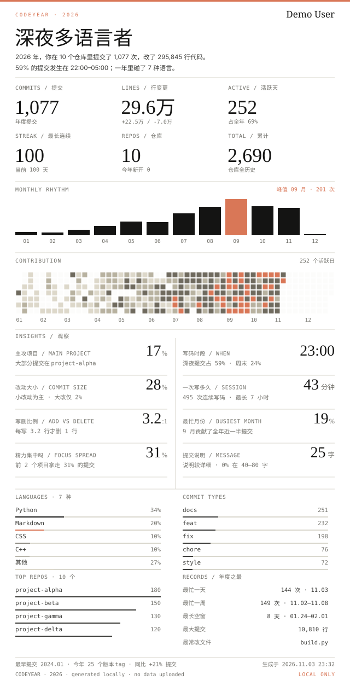

LOCAL-FIRST · ANNUAL CODE REPORT
读你本机的 .git，生成中英双语 HTML 报告、2400×3200 海报、
完整长图，以及一张能挂到 GitHub 主页的年度卡片。
私有项目、离线环境、公司电脑都能用；默认模式不登录、不上传。

GitHub 主页卡片 · 640×1254 · 浅色 / 深色
官方的年度 Wrapped 通常只覆盖公开数据、还要授权； 而大多数人的代码在私有仓库、公司内网或 Gitee。 CodeYear 直接读本机的 .git，所以私有项目也能出现在报告里。
封面摘要 + 数据分析区的 10 项指标对照和 12 个月双柱图。
直接读本地 git，按你的邮箱/名字过滤，不上传代码。
同一份数据同时生成中文和英文 HTML 报告。
浅色/深色两版 SVG，可用 <picture> 自动切换。
附带 GitHub Action，每日更新主页卡片和 README。
默认模式没有网络请求；公开 GitHub 模式是可选联网功能。